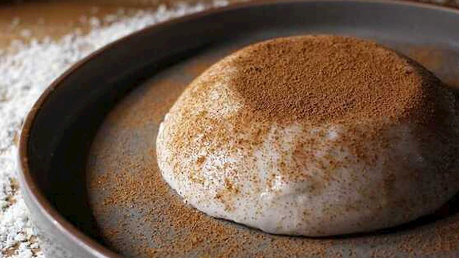
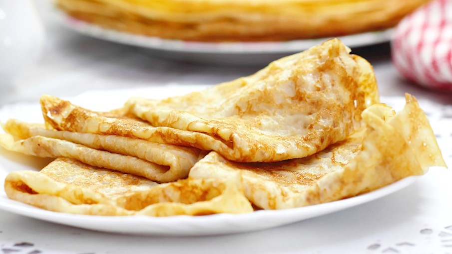

At BIBI, we believe in the magic of food that brings people together. Our menu is crafted with love and passion, offering a delightful array of dishes that cater to every palate. From appetizers to desserts, each item is a testament to our commitment to quality and flavor.
Join us for an unforgettable dining experience where every bite tells a story.
Explore our menu below and discover the culinary delights that await you at BIBI.
-
Party Cheese Bread : 12dt

A pull-apart bread filled with gooey melted cheese — perfect for sharing.
-
Fruit Charcuterie Board : 10dt

A colorful assortment of fresh fruits arranged beautifully for snacking or dessert.
-
Hot Spinach Artichoke Dip : 15dt

A creamy, cheesy dip made with spinach and artichokes — served warm and bubbly.
-
Tuscan Sausage & Bean Dip : 14dt

A hearty dip with Italian sausage, white beans, and herbs — full of rich flavor.
-
Fried Prosciutto Tortellini : 13dt

Cheese-stuffed tortellini wrapped in prosciutto and fried until golden and crispy.
-
Braised Chicken Legs With Grapes and Fennel : 23dt

Succulent chicken legs slowly braised with sweet grapes and aromatic fennel.
-
Meatball Casserole : 22dt

A hearty casserole layered with juicy meatballs, sauce, and melted cheese.
-
Honey-Garlic Chicken : 20dt

Chicken glazed with a sweet and savory honey-garlic sauce.
-
Chicken Nachos : 25dt

Crispy nachos topped with seasoned chicken, cheese, and jalapeños.
-
Pan-Seared Salmon : 27dt

Fresh salmon fillets seared to perfection with a crispy skin.
-
BBQ Chicken Salad : 19dt

Grilled BBQ chicken served over greens with tangy dressing and toppings.
-
Steak Diane : 32dt

Tender steak in a rich mushroom-brandy sauce — a classic favorite.
-
Smothered Pork Chops : 35dt

Pork chops cooked in a creamy onion gravy until perfectly tender.
-
Pulled Pork Loaded Baked Potatoes : 33dt

Baked potatoes stuffed with smoky pulled pork and your favorite toppings.
-
Oven-Baked Baby Back Ribs : 37dt

Fall-off-the-bone ribs baked low and slow with barbecue seasoning.
-
Tembleque : 14dt

A creamy Puerto Rican coconut dessert with a soft, jelly-like texture.
-
Clotted Cream Ice Cream : 11dt

Rich and velvety ice cream made with thick clotted cream for a luxurious taste.
-
Tiramisù : 10dt

A classic Italian dessert made with layers of coffee-soaked ladyfingers and mascarpone cream.
-
Crêpes : 12dt

Thin, soft French pancakes that can be filled with sweet or savory ingredients.